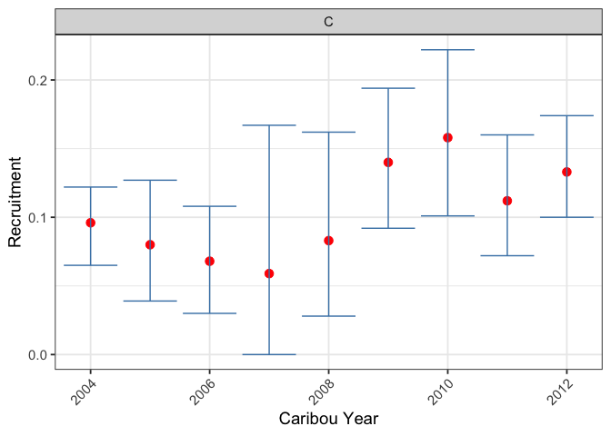
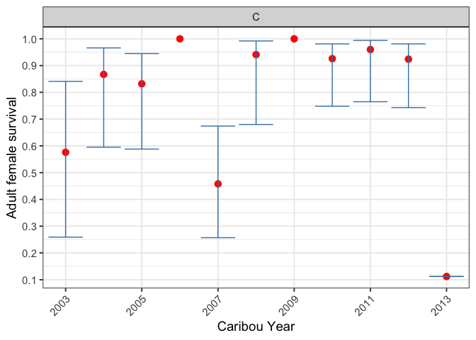
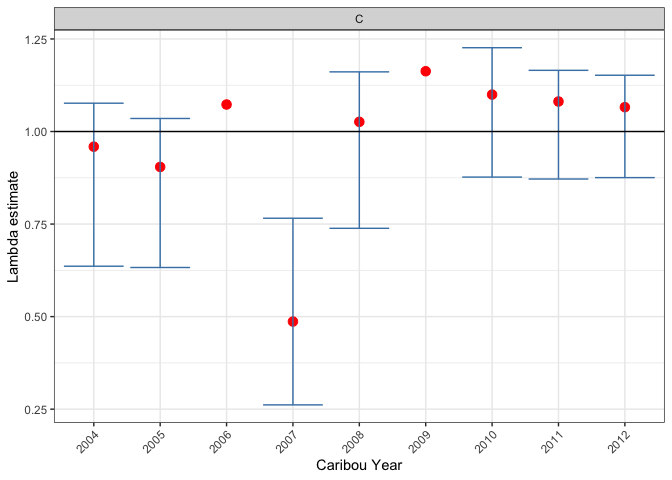
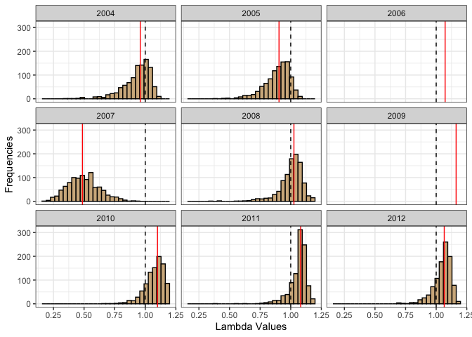

Introduction
The goal of bbouretro is to provide the ability to calculate survival, recruitment and population growth using the traditional methods.
Installation
To install the latest version from GitHub
# install.packages("remotes")
remotes::install_github("poissonconsulting/bbouretro")Example
set.seed(101)
library(bbouretro)
library(bboudata)
# generate recruitment estimate for each year
recruitment_est <-
bbr_recruitment(
bboudata::bbourecruit_c,
adult_female_proportion = 0.65,
sex_ratio = 0.5,
variance = "bootstrap"
)
bbr_plot_recruitment(recruitment_est)
# generate survival estimate for each year
survival_est <-
bbr_survival(
bboudata::bbousurv_c,
include_uncertain_morts= TRUE,
variance = "greenwood"
)
bbr_plot_survival(survival_est)
# calculate lambda now that both recruitment and survival have been calculated
growth_est <- bbr_growth(survival_est, recruitment_est)
summary <- bbr_growth_summarize(growth_est)
summary
#> # A tibble: 9 × 13
#> PopulationName CaribouYear S R estimate se lower upper prop_lgt1
#> <chr> <int> <dbl> <dbl> <dbl> <dbl> <dbl> <dbl> <dbl>
#> 1 C 2004 0.867 0.096 0.959 0.115 0.636 1.08 0.323
#> 2 C 2005 0.832 0.08 0.904 0.105 0.633 1.03 0.093
#> 3 C 2006 1 0.068 1.07 NA NA NA NA
#> 4 C 2007 0.458 0.059 0.487 0.128 0.262 0.766 0
#> 5 C 2008 0.941 0.083 1.03 0.1 0.739 1.16 0.615
#> 6 C 2009 1 0.14 1.16 NA NA NA NA
#> 7 C 2010 0.926 0.158 1.1 0.085 0.877 1.23 0.854
#> 8 C 2011 0.96 0.112 1.08 0.075 0.872 1.16 0.861
#> 9 C 2012 0.924 0.133 1.07 0.072 0.875 1.15 0.808
#> # ℹ 4 more variables: mean_sim_survival <dbl>, mean_sim_recruitment <dbl>,
#> # mean_sim_growth <dbl>, median_sim_growth <dbl>
bbr_plot_growth(growth_est)
bbr_plot_growth_distributions(growth_est)
Code of Conduct
Please note that this project is released with a Contributor Code of Conduct. By contributing to this project, you agree to abide by its terms.